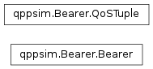

qppsim.Bearer module¶
Documentation¶
Module that provides the model for a Bearer
-
class
qppsim.Bearer.Bearer(ue, qci, gbr, mbr, pvi, pci, arp, queue_size, port)[source]¶ Bases:
objectClass providing the model for Bearers. It includes the QoS and ARP configuration of the bearer, a reference to the UE that activates the Bearer, the size of the RLC queue for the Bearer, and the port used by the application linked to this bearer (used only for tracing purposes).
A bearer may be dedicated, or default. Dedicated bearers are linked to application instances in a 1-to-1 relation. Default bearers may have 0 to n application instances linked to them, and therefore their ‘port’ member is set to ‘None’.
The class is hashable and comparable.
-
add_packet(packet)[source]¶ Add a packet to the RLC queue. If the packet’s size is larger than the remaining available space in the queue, the packet is discarded and it’s size is recorded as a loss.
-
arp¶ Get the ARP
-
bid¶ Return the Bearer ID
-
gbr¶ Return the GBR
-
get_metrics()[source]¶ Get the QoS metrics stored by this Bearer. Loss and Throughput are reported as stored (SortedDicts where the key is the time, and the value is the bytes sent / lost), while delays are computed on each call.
The metrics are returned as a tuple of SortedDicts.
-
mbr¶ Get the MBR
-
mcs¶ Get the UE MCS
-
modify_qos(new_qci, new_gbr, new_mbr)[source]¶ Modify the QoS parameters of the bearer: QCI, GBR, and/or MBR. Trace the modification in the bearer trace. Return a boolean indicating if the modification succeeded.
-
pci¶ Get the PCI
-
pending_size()[source]¶ Return the total size of the queue that still needs to be allocated RBs. This does not include the Bytes currently waiting for retransmission.
-
port¶ Get the Port used by the application
-
pvi¶ Get the PVI
-
qci¶ Return the QCI
-
queue_size¶ Get the RLC queue size, in bytes
-
queue_used_per_packet()[source]¶ Return a list with the size still in queue of each packet in the queue.
-
rtx(amount)[source]¶ Successfully retransmit a certain amount of Bytes. This method explores the queue and marks up to the specified amount of bytes as successfully transmitted, and records the throughput for this time period. When this operation ‘completes’ the transmission of a packet we schedule the reception by the application after TX_DELAY milliseconds.
-
teardown()[source]¶ Teardown this bearer. This operation shall fail if this is a default bearer. Redirect the application linked to this bearer to the UE’s default bearer.
-
tx(amount, rtx=False)[source]¶ Transmit a certain amount of Bytes from the RLC queue. If the ‘rtx’ flag is set to ‘True’, the Bytes are considered to have been transmitted with errors, and therefore they must be set aside awaiting retransmission. If the flag is set to ‘False’, then the Bytes are successfully transmitted. In this case we need to record the Bytes as the bearer throughput for this unit of time, and also check if a packet is fully transmitted, to report it to the application as ‘received’ after TX_DELAY milliseconds. and record the size in the throughput statistic.
We need to consider that the amount of Bytes to transmit may be larger than the pending size of a single packet, and if this happens, we need to continue transmitting bytes of the next packet, as needed.
-
ue¶ Return the UE that established this bearer
-
-
qppsim.Bearer.QosTuple¶ Named tuple to allow for easier access to the content of the QoS fields
alias of
QoSTuple
-
qppsim.Bearer.TX_DELAY= <qppsim.Time.Time object>¶ Constant with the TX delay to add to a packet reception once the last byte has been successfully scheduled